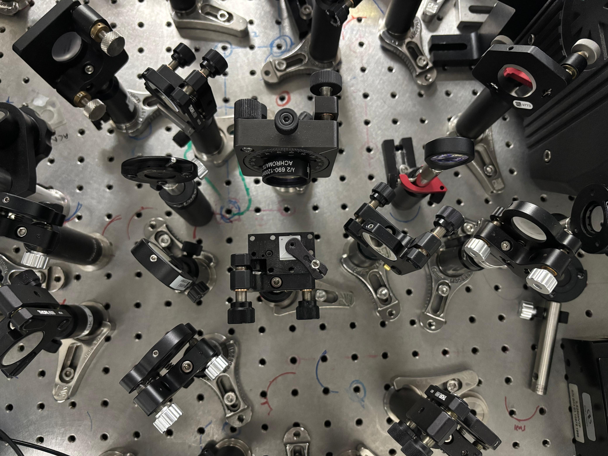
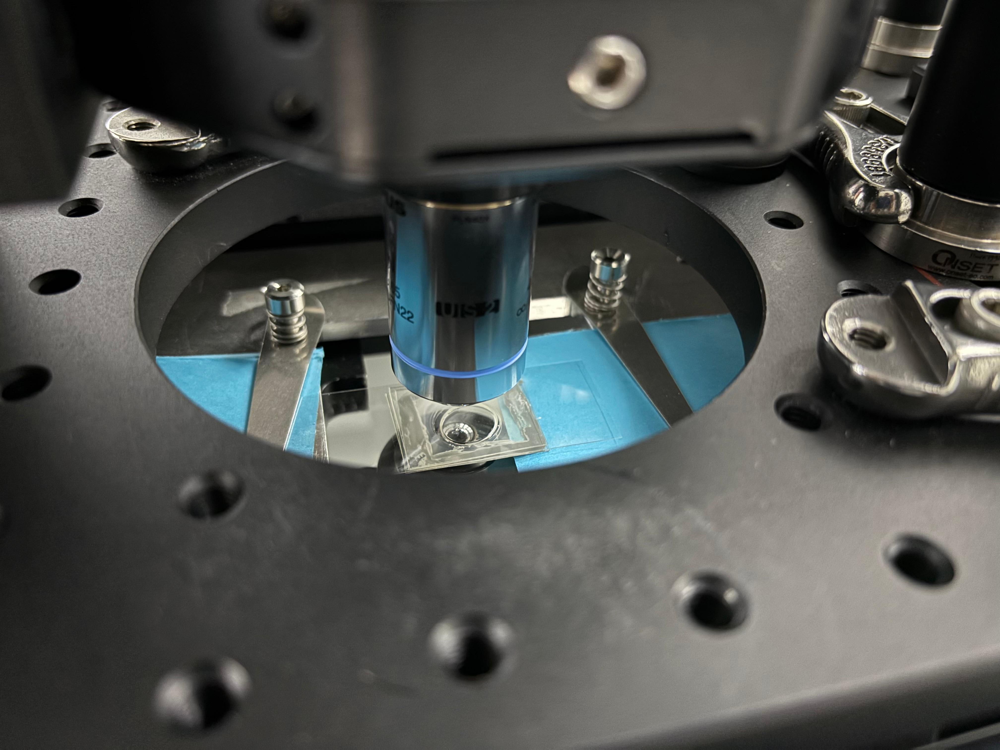

Chemical Imaging • Vibrational Spectroscopy • Optical Instrumentation
Development and integration of a home-built optical photothermal infrared and Raman microscopy platform for spatially resolved chemical characterization, automated imaging, and complementary vibrational spectroscopy.
I developed a home-built multimodal microscopy platform combining optical photothermal infrared spectroscopy with Raman spectroscopy for spatially resolved chemical characterization.
The system integrates mid-infrared excitation, visible probe detection, lock-in based photothermal signal acquisition, an inverted microscope, motorized sample positioning, galvanometric beam scanning, and Raman spectroscopic detection.
A major focus of the project was the integration and optimization of the individual optical, electronic, and mechanical components into a single platform capable of acquiring complementary infrared and Raman information from the same microscope system.


My work involved optical alignment, beam delivery, photothermal signal detection, microscope integration, detector alignment, automated scanning, and optimization of spectroscopic signal acquisition.
The O-PTIR pathway uses a tunable mid-infrared excitation source together with a visible probe beam to detect photothermal changes induced by molecular vibrational absorption.
Raman spectroscopy was integrated into the same microscope platform to provide complementary vibrational information. This combination enables infrared- and Raman-based chemical characterization without requiring separate microscope systems.
Both motorized-stage and galvanometric scanning methods were implemented for spatially resolved measurements. Stage scanning enabled larger-area mapping, while galvo scanning provided faster local imaging by rapidly steering the optical beam across the sample.
Custom Python-based software was developed for instrument control, automated data acquisition, scanning, image generation, and coordination of optical and mechanical components.
Calibration of the galvo scanning system produced a spatial sampling scale of approximately 0.553 µm per pixel, enabling high-resolution chemical imaging and spatially resolved spectroscopic measurements.
The multimodal platform was developed with particular interest in chemical identification and imaging of polymers, microplastics, nanomaterials, heterogeneous materials, and other samples where spatially resolved vibrational information is valuable.
Combining O-PTIR and Raman spectroscopy provides complementary molecular information because the two techniques are governed by different vibrational selection rules. Their integration therefore improves confidence in chemical identification and material characterization.